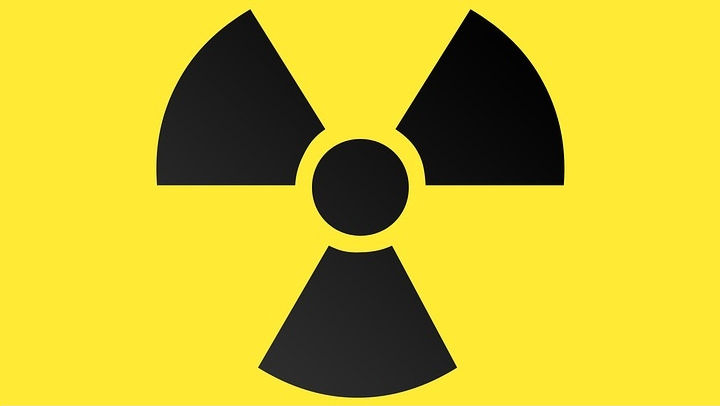
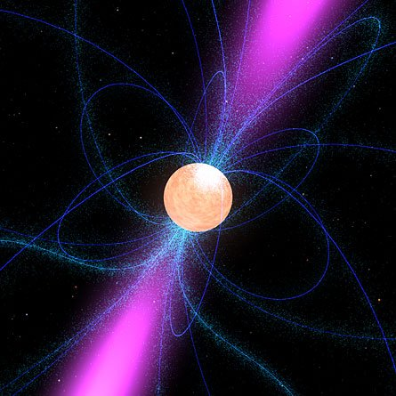

Promieniowaniem nazywamy rodzaj strumienia cząstek lub niektórych innych fal, a także proces ich wysyłania (emisji). Promieniowaniem mogą być dowolne cząstki elementarne, ich układy jak jądra atomowe, a także fale czasoprzestrzeni zwane promieniowaniem grawitacyjnym.
Przyczyny promieniowania ciał są różne. Elektrodynamika przewiduje, że wysyłanie fal elektromagnetycznych towarzyszy przyspieszaniu ładunków; przykłady zjawisk tego typu to promieniowanie hamowania, promieniowanie synchrotronowe i promieniowanie cieplne. Inne źródła fal EM to np. rekombinacja plazmy, która wytworzyła mikrofalowe promieniowanie tła; zachodzą także emisja wymuszona, różne rodzaje luminescencji oraz niektóre reakcje jądrowe i cząstek elementarnych, na przykład anihilacja materii zwykłej z antymaterią. Przyczyną niektórych rozpadów jądrowych są za to oddziaływania słabe. Promieniowanie grawitacyjne powstaje m.in. przy spadaniu na siebie dwóch gęstych ciał jak gwiazda neutronowa i czarna dziura.
Od końca XVIII wieku odkryto coraz nowsze rodzaje promieniowania, dla których znaleziono szereg zastosowań naukowo-technicznych.